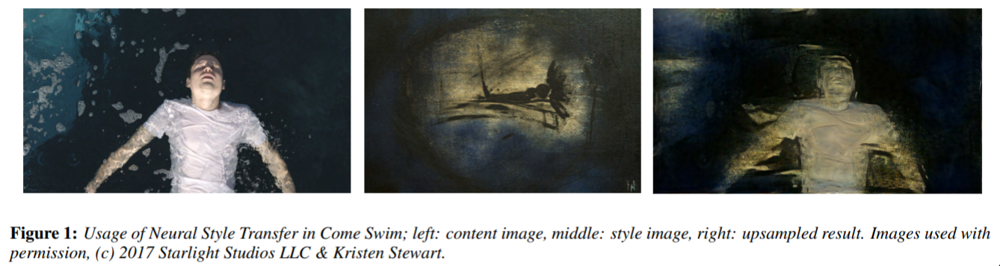

🎥 Deep learning showreel!
We closely follow research in deep learning and AI. Here are a collection of cool, interesting, and fun applications that we've seen, with a brief explanation and a link to the original paper. All figures are taken directly from the paper or the associated website.
Check back for regular updates, or sign up to the newsletter (below) to receive the latest cool stuff, monthly!
-
Synthetic fruit — July 10, 2019

This is an old idea, and just one example among many. There’s nothing inherently outstanding in this paper, but we just wanted to note the very useful technique of using “fake” (synthetic) data to help solve real-world problems. This is a very useful technique, especially in light of the remarkable abilities of transfer learning to help us adapt to new data.
Out-of-Distribution Detection using Generative Models — July 10, 2019

In an old blogpost we discussed the problem of networks making over-confident predictions. This paper focused on over-confidence on images that the network has never seen (i.e. trained on cats and dogs, then very confident that a picture of a boat is a dog).
A classical idea (we saw it in the “Detecting the Unexpected” paper) is that if we think about how well we can reconstruct a given image, that might tell us something about how often our network has seen it; i.e. if it’s “in-dstribution” or not.
This paper notes that one problem with that idea is that if the thing we’re looking at is “simple” (technically, has “small variance”), then because the generative models are powerful, they might still do a good job.
The approach they provide in the paper is to use a different kind of generative network, the so-called “Neural Rendering Model (NRM)”, to do the image generation, and that this new technique just happens to be better at being informative when the data is from a set the network has never seen.
The picture above shows that the NRM-approach does quite a good job of seperating between images the network has seen and hasn’t seen.
This is a bit of a technical result, but it’s a crucially important area of research for networks that are going to be used in the real world.
Learning to understand videos for answering questions — July 10, 2019

Videos are becoming increasingly prolific on the internet. Naturally, then, it makes sense that researchers are spending time trying to understand them. One particular area of research is so-called “Visual queastion-answering”. The point is to train a network to be able to watch a video, then answer questions (via text) about what happened in the video. Some examples are provided in the image above.
This work introduces a nice idea to this area, one that we’re seeing frequently on the showreel, namely: building up a rich representation first, and then using that representation to further refine answers. This should be a bit similar, conceptually, to the “Scene Graph” work, for example.
It’s also neat that the researchers are from Deakin!
What-If ... We could interactively understand ML Models? — July 9, 2019

This is some software that Google put out a few years ago under a different name (it was called “facets”). This specific tool I’m not so convinced on, but it’s a very good attempt to tackle a very important idea — how bias and decision-making can be understood interactively.
Machine Learning for Side Channel Attacks — July 9, 2019

This is a quirky one, but it’s kind of “flag-planting” in the ML/Security world. For years, security researchers have spent time finding what they call “side-channel” attacks. An example is, say, listening to the soup that someone makes when typing, and from that sound, working out what they are typing. It’s called “side-channel” because it’s not, say, capturing the keystrokes via the computer, it’s via an additional “channel”.
The main point of this paper is that they’re applying standard ML techniques, in particular in regards to voltage, and are able to make an estimate of which applications are running on a given piece of hardware. This might not sound super useful as it is, but, as always in the security world, there’s much more juice to be squeezed here.
This will definitely be a space to watch in the security space - bringing in AI techniques to enhance our offensive security capabilities!
Designing User Interfaces that Allow Everyone to Contribute to AI Safety — July 9, 2019

Improving the situation around AI Ethics is strongly on our agenda at the Braneshop. This paper highlights an interesting situation: suppose you have people who want to provide feedback to some decision making process; what should the interface they use look like?
Here they explore a potential design that allows people to see the impact of their actions in a variety of ways.
This won’t be the last word on the matter, but it’s a nice contribution to the field, and hopefully pushes people to think very hard about this problem.
This is one bit of work in a growing field we refer to as “The UX of AI”. This will definitely be a huge area over the coming years.
Linking Art through Human Poses — July 8, 2019

This one is cool for the kind of neat technique it demonstrates. They use a pose network (something that just looks at an image of a person, say, and estimates what their skeleton looks like; i.e. it tries to guess some straight lines that connect their arms and legs and such) to connect different artworks. It’s a neat application of what is becoming a standard technique.
Estimating travel time without roads — July 8, 2019

Again, a neat idea applied well. In this paper they suppose that, in fact, we don’t need detailed road networks to do reasonably well at estimating travel time. We just need to get a vague feeling for the kinds of areas we’ll be travelling though (i.e. highway, commercial, residential, country, park, urban, etc). They make these ideas precise and get some great results!
Action Recognition from Poses — July 8, 2019

A pretty standard, but useful, technique that uses a kind of multi-stage process to: 1) compute the pose, 2) then from the a series of these poses, ver time, work out what “action” people are performing. Specifically here they focus on people going past train ticket machines in various ways, but the application is general.
Albatrosses from Space — July 3, 2019

A really nice scientific application of deep learning; and something that maybe any reasonable person would not assume is possible right now. We like this one because it’s the overlap of modern deep learning techniques to old (but important!) problems of tracking animal movements for conservation reasons.
AI for Economic Uplift of Handicraft — May 31, 2019

While this one isn’t strictly using deep learning, it does use some classical machine learning techniques. But the reason we consider it particularly cool, is because the authors actually took their system “to the streets”, as it were, and verified that using the new design processes helped the artisans sell more items!
Attacking person-identification with patches — April 18, 2019

The game in this one is - can we make a picture, that can be printed and held in front of us, that will fool a person-detector? Yes, it turns out.
This is refered to as an “adversarial” attack, and they have gained a lot of attention recently. This one in particular is interesting because they attack a standard person-detector (so-called “Yolo”) and the image they use is “local” and “printable”. There had been a few results in this area, but nothing attacking person detectors.
In the research world, we’re seeing work on both fronts. There are a lot of work on how to do more of these, and make them more robust, and likewise there is a lot of work on how to make classifiers and detectors less vulnerable to such attacks. Who will win? It’s not clear. I’d put my money on it always being possible to make such attacks, given enough information on the classifier. But, the cost of such attacks will rise significantly, making it unfeasible for most of us.
Detecting the Unexpected — April 16, 2019

This is a really neat and important idea. The application here is in self-driving cars, but the central idea is very general. The main point is, if we’ve trained a network to detect certain classes of thing (“car”, “road”, “person”, “truck”) then, if it sees something completely unexpected, (“goose”), what will it predict? Depending on how you set up the network, it will predict one of the known classes. This work is about quantifying how confident the network should feel about such prediction. Their idea is to ask the network to think about how well it can reconstrut the thing it thought it saw. If it finds it hard, then that indicates that the thing it saw is moderately unknown to it, and so it shouldn’t be confident. As we have more AI out in real life making decisions, quantifying uncertainty will become increasingly important.
Expressive 3D Body Capture from a Single Image — April 11, 2019

More and more we’re seeing deep learning tackle rich reconstruction problems from simple inputs. This is a classic of the genre. As humans, we can easily imagine the 3D structure of the person in the photo; and it turns out now deep learning can do the same, via the techniques in this paper. It’s very impressive work, and is applicable for those people wishing to capture this information without a complicated set up of a 3D body scanner. As usual, the typical applications will be in retail, but maybe also augmented-reality and other such fun things. As is the case with all these body-pose-related papers, they use an underlying pose network and build on top of it’s outputs. This is also a central and important topic in modern AI: building up rich and strong capabilities by combining different techniques.
Extreme Image Compression — April 8, 2019

A natural thought would be that if we know a lot about the thing we’re trying to compress, we can do a better job. Standard compression algorithms are general-purpose, and as such, there is probably room to improve. This is the observation and work in this paper: They learn a compression function for a specific set of data, and they do really well! Probably not suitable for most of us, but you can be sure the big data storage providers will be working on these kinds of techniques into the future.
If we wanted to be trendy we could summarise this as “big data makes small data”.
Can a Robot Become a Movie Director? — April 5, 2019

The main point here is that if we’re interested in determining where to point a drone while filming some scene, it might be hard, because the director would need to be able to somehow see everything, while the drone is flying. This paper proposes that perhaps thee could be a method to have the drone know where to look.
Image2StyleGan - aka Ryan Obama aka Oprah Johansson — April 5, 2019

One of the most exciting areas of AI is the generative/creative opportunities. And in this area, something people are always fascinated by is the exploring the “space” of images; i.e here are all the photos of people, but what does a person who is “halfway between these two people” look like? This paper works on that problem, and produces some very cool looking people such as Ryan Obama, Oprah Johansson and Hugh de Niro. Notably, in this paper it seems like it doesn’t work so well for abstract/non-person style photos; but that’s probably due to the data, and not a general problem.
Learning how music and images relate — March 30, 2019

This result is nice because it’s using a concept that we think is so important, we’ve made it a central part of our technical workshop: the autoencoder.
In this work they map images and music into the same “space” (i.e. points on the graph in the picture), and in-so-doing, they can learn when images and music are related! Nice, simple, and useful!
Detecting people using only WiFi — March 30, 2019

This is an interesting one. WiFi is everywhere; and probably a reasonable person wouldn’t assume they could be tracked (down to estimates of where they are walking, and the overall pose of their body) if there isn’t a camera around. But it turns out that this data actually can be gathered in (an ideal) WiFi set up. That is, the pose of people was determined without a camera; using only WiFi signals. No doubt this field - sensing human activity through non-camera based sensors - will continue to grow.
Face Synthesis from a Single Image — March 26, 2019

Ignoring the specific contributions, this is a conceptually simple paper; but the results look amazing. The idea is: can we find a 3D model from a single image? And how much detail can it capture?
Turns out, heaps of detail! They introduce some nice techniques for modelling the facial features and such, but the main thing I like are the results.
Unconstrained Ear Recognition — March 11, 2019

Trust no-one. If you think covering your face is enough to stop people from detecting who you are, you’re wrong. It turns out it’s possible to identify people from their ears. Why would anyone want to do this? Who knows. But it’s happening!
Finding small objects in a large scene — February 6, 2019

Satellite imagery is a hot topic. There’s been many stories of people using such imagery to gain competitive advantage in many ways; from estimating the number of sales at department stores, to prediction crop yield.
This paper in particular is very neat because they discuss a network that allows them to compute fine-grained information — colour, position, and angle of cars — in very large satellite photos.
This is really an impressive result.
Image Generation from Scene Graphs — April 4, 2018

Work from the famous Fei Fei Li, this is a very neat idea. There’s been some famous networks (“StackGAN”) that are able to generate pictures from text. But, they fail when you want to generate a complicated and unfamiliar scene. Humans, of course, can “dis-entangle” different concepts when thinking of complicated scenes, such as “a cat waiting to catch the train”. Even if we haven’t seen this exact thing before, we can easily imagine it, because we know how the things look, independently. The contribution in this work is the same idea, for neural networks, and they achieve awesome results! We can definitely expect significant improvements in this area, over the coming years.
Women also Snowboard — March 26, 2018

This is a famous and interesting paper. They identify a common problem in so-called “captioning” networks: namely, they can be right for the wrong reasons. In the photo, we see that a network guesed it was a man sitting at a computer; but it only spent time “looking” at the computer to work this out. In other words, a computer was strongly correlated with the photo being of “a man at the computer” in the training data. In this paper they introduce some techniques to deal with this problem. Basically, their idea is that we can penalise the network for thinking about gender when no gender information is present, and reward it for thinking about gender when it is apparent. Furthermore, their approach is generally useful for other models and situations.
We can expect more technical results in this area to be implemented alongside the social techniques (i.e. having more diverse people involved in the building of AI systems).
Trying clothes on, virtually — November 22, 2017

This is a great example of attempting to apply AI in the real world. The problem here is the typical online-shopping problem: Here’s a thing that maybe I want to buy; but how would it look on me? This paper attempts to solve that problem by using pose information. It does a pretty good job for photos that are “simple” (i.e. model on a white wall), and does a reasonable, but not great, job on what is referred to as photos “in the wild” — just photos from everyday life; inside or outside. Over the years we can expect to see this kind of technology hit on-line retailers.
Priming Neural Networks — November 16, 2017

This is a fun one. First, try and find “something” in the photo (it’s normal-sized; and you’ll know it when you see it).
…
Did you find anything?
Now, try searching for: a cat (highlight this section of text to see it). Can you find it now that I’ve told you what to look for? Even if you can’t, it turns out that neural networks can. I think this is a really neat idea - priming a network to help it know what it’s trying to do.
Style Transfer in Come Swim — January 19, 2017
 This is a landmark paper for a few reasons. First of all, it’s co-authored by a movie star; secondly it’s an application of the famous “style transfer” algorithm to a short film, and importantly that put a significant amount of work into making sure that the sylistic quality of the style transfer is high; which you don’t typically see. It’s a really interesting collaboration between the researchers and the film industry. I’m sure we’ll see a lot more like this over the years!
Understanding and Predicting Visual Humour — December 14, 2015

Easily Noons favourite paper of 2015. In life we face many problems. One of them is, given some non-funny situation, how can we make it funny? Naively one might think computers can’t begin to attemp to solve this problem. One would be wrong. Consider the top row of this image. Two people having dinner. Very unfunny. Two dogs having dinner at a dinner table? Hilarious. Likewise, cats in a park? Unfunny. A racoon riding a scooter in the same park? Brilliant.
This network was trained on data generated by humans who took specific scenes and adjusted them to make them funny.
We’re not totally sure where we’ll see more applications of this work, but we love it.

Braneshop is located on the traditional lands of the people of the Kulin nation. We acknowledge that sovereignty was never ceded and pay our respects to elders past, present and emerging.
{kind=link}